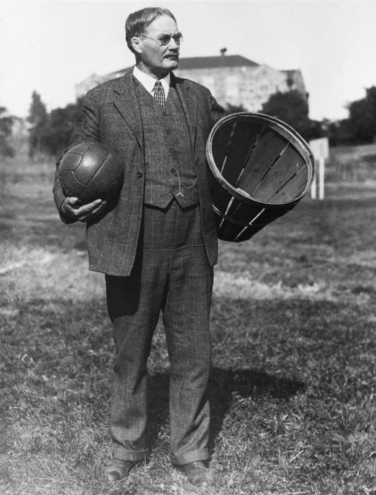
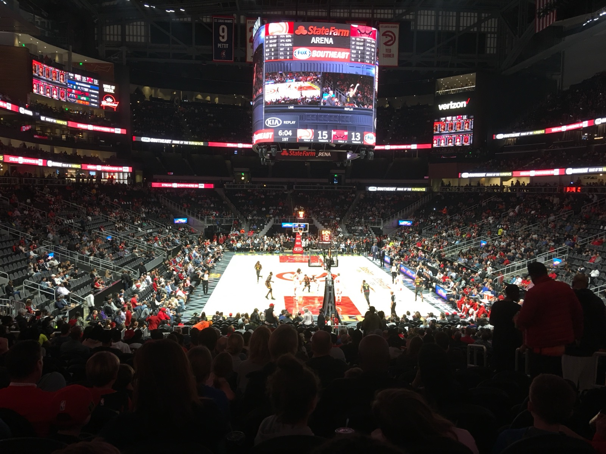
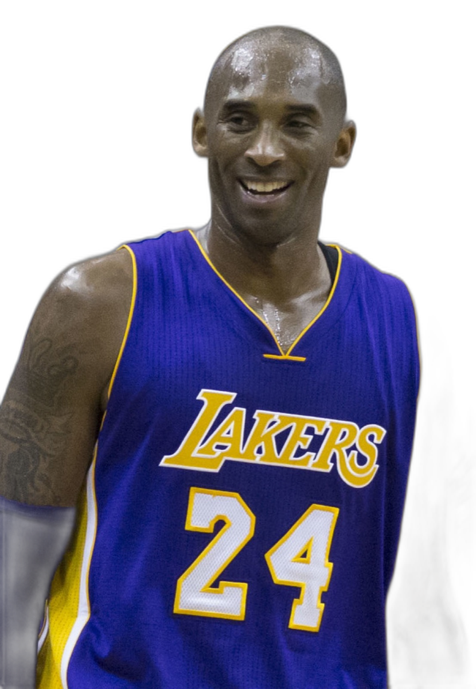
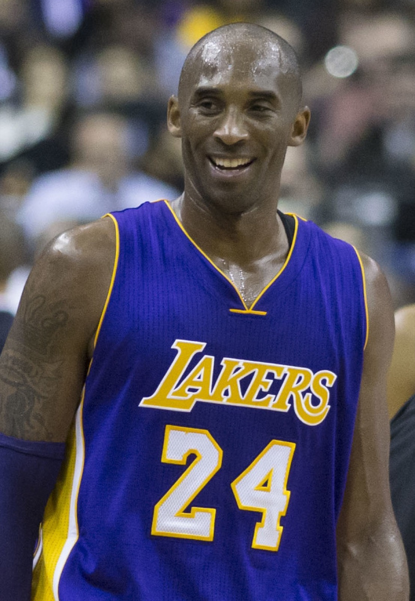
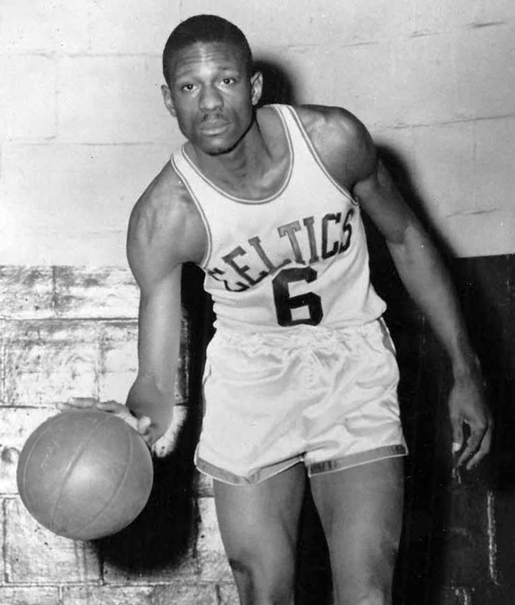
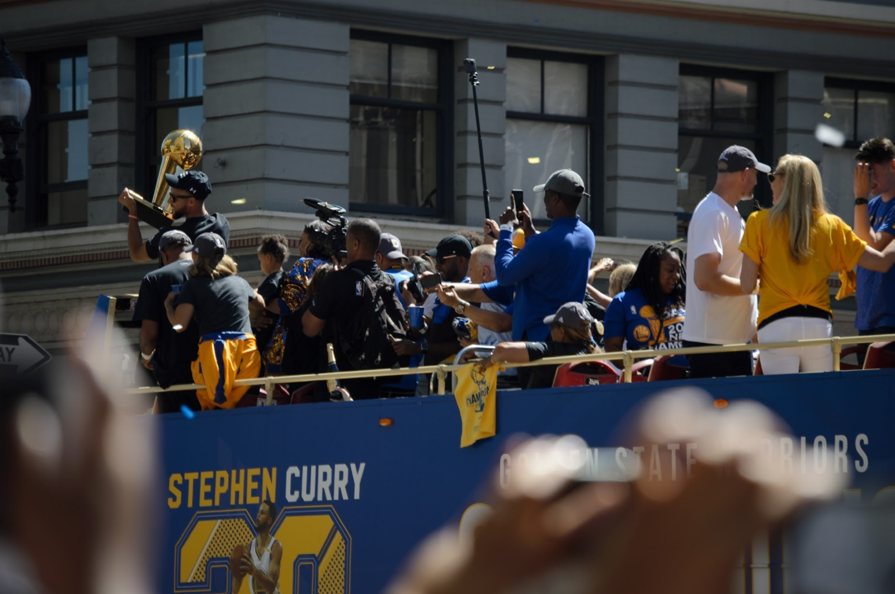
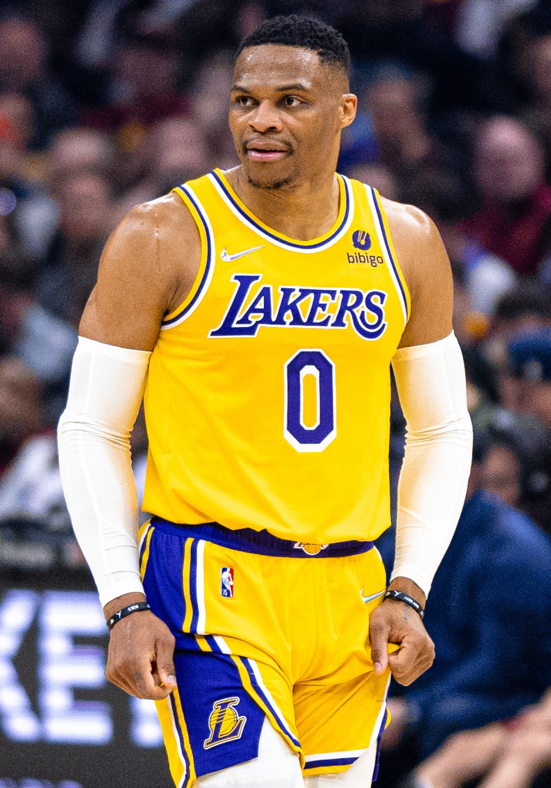
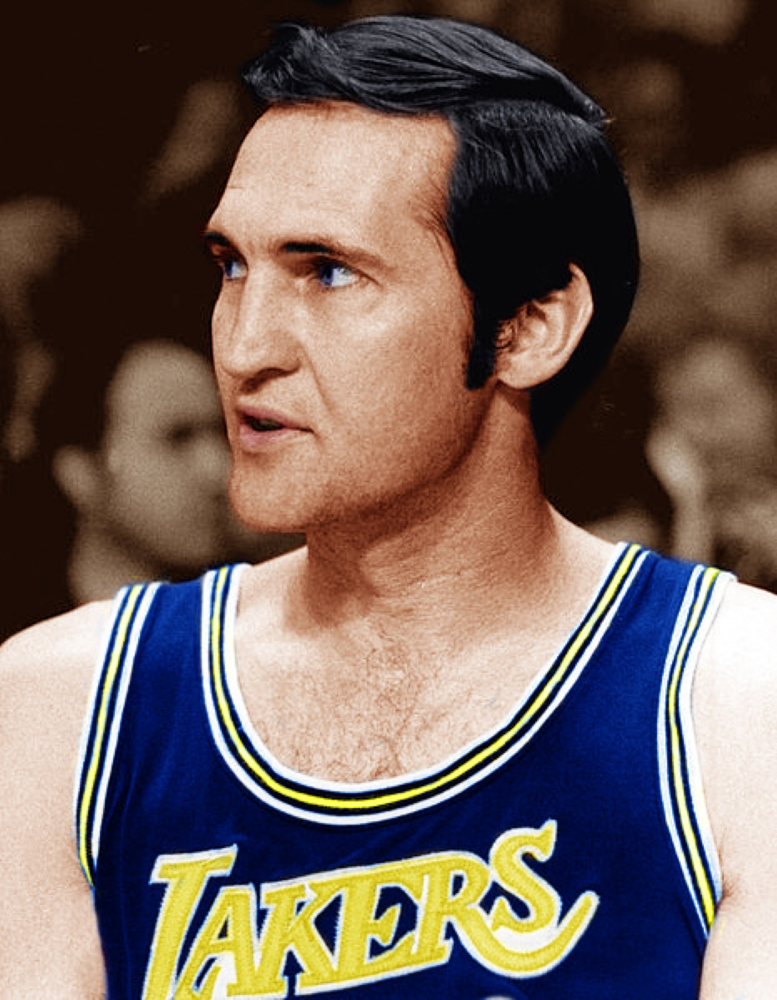
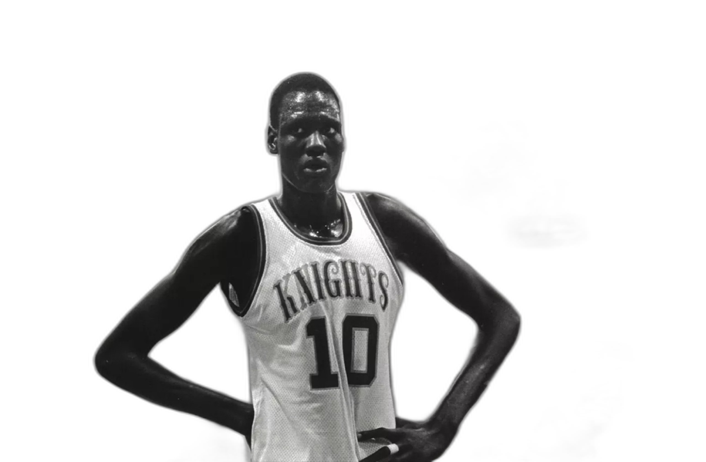

NBA
Итгэмээргүй боловч бүгд үнэн рекордууд
ЖЕЙМС НЕЙСМИТ БА САГСАН БӨМБӨГ
Спрингфилд хот: 1891 онд багш Жеймс Нейсмит сагсан бөмбөгийн анхны дүрмийг зохион бүтээсэн.
Жимсний дүнзэн сагс: Тэр үед тоорын дүнзэн модон сагсыг биеийн тамирын заалны хананд өлгөж тоглодог байжээ.
Энгийн дүрэм: Анх ердөө 13 энгийн дүрмээр эхэлсэн тоглоом өдгөө дэлхийн хамгийн том спорт болон өргөжжээ.

BAA-ЭЭС ӨНӨӨГИЙН NBA ХҮРТЭЛ
1946 оны 6-р сарын 6: Нью-Йорк хотод "Basketball Association of America" (BAA) нэртэйгээр анх үүссэн.
1949 оны нэгдэл: Өөр лигтэй албан ёсоор нэгдэж, бидний сайн мэдэх NBA нэрээ авчээ.
Өнөөдөр: Дэлхийн хамгийн алдартай спортын лигүүдийн нэг болж, 200 гаруй улсад тэрбумаар хүн үздэг байна.

ВИЛТ ЧЕМБЕРЛЕН
1962 оны 3-р сарын 2: Нэг тоглолтод яг 100 оноо авч, хэзээ ч эвдэгдэхгүй түүхэн рекорд тогтоосон.
50 онооны дундаж: Тэр улирал бүтэн бүх тоглолтод дунджаар 50.4 оноо авсан байна.
0 фоул-аут: Бүх карьерийн туршид нэг ч удаа фолоор тоглолтоос хасагдаж байгаагүй гайхамшигтай сахилга баттай.

КОБИ БРАЙАНТ (2006)
2006 оны 1-р сар: Торонто Рэпторс багийн эсрэг ганцаараа 81 оноо авч дэлхий нийтийг алмайруулсан.
Түүхэн 2-р байр: Энэ нь Вилт Чемберлений 100 онооноос хойших NBA-ийн түүхэн дэх хамгийн өндөр оноо юм.
2-р хагасын дэлбэрэлт: Зөвхөн тоглолтын хоёрдугаар хагаст л гэхэд 55 оноо авч байжээ.

КОБИ БРАЙАНТ — СҮҮЛИЙН ТОГЛОЛТ
2016 оны 4-р сар: 20 жилийн гайхамшигт замналаа өндөрлөж зодог тайлах сүүлчийн тоглолтдоо яг 60 оноо авсан.
Ялалтын шидэлт: Юта Жазз багийн эсрэг сүүлийн минутад дараалан оноо авч багтаа хожил авчирсан.
"Mamba Out": Спортын түүхэн дэх хамгийн сэтгэл хөдөлгөм, дахин давтагдашгүй зодог тайлалт болсон.

КЛЭЙ ТОМПСОН (12 МИНУТ)
12 минутын гайхамшиг: 2015 онд Клэй Томпсон ердөө 12 минутын дотор 37 оноо авч, нэг мөчлөгийн дээд рекорд тогтоов.
100% Оновч: Тухайн үед шидсэн 13 шидэлтээ бүгдийг нь оновчтой болгосон (9 гурав, 4 хоёр оноо).
Алдаагүй цуврал: Торгуулийн 2 шидэлтээ ч оруулан сагсан бөмбөгийн түүхэн дэх хамгийн төгс 12 минутыг бүтээсэн.

БИЛЛ РАССЕЛ (БОСТОН СЕЛТИКС)
13 жилд 11 удаа: Бостон Селтикс багтай хамт 13 жилийн дотор 11 удаа аваргын цом хүртсэн.
8 дараалсан аварга: Үүний 8 аваргыг 1959-1966 онуудад тасралтгүй авсан нь дахин хэзээ ч давтагдахгүй амжилт юм.
Finals MVP нэрэмжит: NBA-ийн Finals MVP цомыг Билл Расселын алдрыг мөнхөлж түүний нэрээр нэрлэсэн байдаг.

СТЕФЕН КАРРИ (2016)
402 гурав нэг улиралд: 2016 онд нэг улиралд 402 гурван онооны шидэлт хийж өөрийнхөө рекордыг хол эвдсэн.
Бүх цаг үеийн тэргүүн: Тэр Рэй Алленыг гүйцэж, NBA-ийн түүхэн дэх хамгийн олон гурван оноо хийсэн тоглогч болсон.
Тоглолтыг өөрчлөгч: Алсын зайн шидэлтийн чадвараараа орчин үеийн сагсан бөмбөгийг бүхэлд нь шинэ түвшинд гаргасан.

ЛЕБРОН ЖЕЙМС (2023)
Каримыг гүйцэв: 2023 онд Карим Абдул-Жабарын 39 жил хадгалагдсан түүхэн онооны дээд амжилтыг эвдсэн.
40,000 онооны босго: NBA-ийн түүхэнд 40,000 оноонд хүрсэн анхны бөгөөд цорын ганц тамирчин болсон.
20+ жилийн тогтвортой байдал: Хоёр арван жилийн турш лигийн дээд түвшинд тоглож байгаа амьд домог.

РАССЕЛЛ УЭСТБРУК
2017 оны түүхэн улирал: Улирал бүтнээр нь дунджаар трипл-дабл хийсэн нь Оскар Робертсоноос хойш 55 жилийн дараа анхных болсон.
200 орчим карьер трипл-дабл: Карьер дээрээ 200 орчим трипл-дабл хийсэн нь бүх цаг үеийн түүхэн дэх хамгийн их нь юм.
Цуцашгүй эрч хүч: Нэг тоглолтод оноо, самбар, дамжуулалт бүгдийг зэрэг дээд түвшинд үзүүлдэг хурд хүчний гайхамшиг.

НИКОЛА ЙОКИЧ
Төвийн тоглогчийн трипл-дабл: Никола Йокич төвийн тоглогч мөртлөө улирлын туршид оноо, самбар, дамжуулалтаар дунджаар 10-аас дээш үзүүлсэн.
Уран дамжуулалт: Төвийн тоглогчийн уламжлалт байрлалыг холбон тоглогч шиг уран нарийн дамжуулалтаар баяжуулсан суут сэтгэлгээ.
Олон талт амжилт: Денвер Наггетсийг аваргын цомд хүргэж, олон удаа лигийн MVP шагналыг хүртсэн.

РЭЖГИ МИЛЛЕР (1995)
9 секундын ид шид: 1995 оны плей-оффт Нью-Йорк Никсийн эсрэг ойролцоогоор 9 секундын дотор 8 оноо дараалан авсан.
Хоёр дараалсан гурав: Эхний гурван оноог хийж, бөмбөгийг таслан дахин гурван оноо авч, торгуулийн шидэлтээр ялалт авчирсан.
Шок: Ялагдах нь гарцаагүй болсон багийг хормын дотор гайхамшигтай ялалтад хүргэсэн түүхэн тоглолт.
ДЭНИС РОДМАН
201 см өндөртэй: Өөрөөсөө хамаагүй өндөр 210+ см төвийн тоглогчдын эсрэг самбарын бөмбөгт ноёрхсон.
7 жил дараалан тэргүүлсэн: Лигийн самбараас бөмбөг авалтын үзүүлэлтээр 7 улирал дараалан тэргүүн байр эзэлсэн.
Хамгаалалтын хана: Оноо авахгүйгээр зөвхөн самбар ба хамгаалалтаар тоглолтыг хожиж чаддаг домогт тоглогч.
ЖОН СТОКТОН
15,806 оновчтой дамжуулалт: NBA-ийн түүхэн дэх хамгийн олон дамжуулалт өгсөн тоглогч.
Бөмбөг булаалтын тэргүүн: Мөн түүнчлэн түүхэн дэх хамгийн олон бөмбөг булаалт (3,265 steals) хийсэн рекордтой.
Эвдэгдэшгүй зай: 2-р байрт байгаа тоглогчоос бараг 4,000 дамжуулалтаар хол тасархай түрүүлж яваа.

ЛОС-АНЖЕЛЕС ЛЭЙКЕРС (1971-72)
33 тоглолт дараалан хожсон: 1971-72 оны улиралд Лос-Анжелес Лэйкерс тасралтгүй 33 тоглолтонд ялсан.
Бүх спортын дээд амжилт: Америкийн мэргэжлийн 4 том спортын лигүүд дундах хамгийн урт ялалтын цуврал хэвээр байна.
Домогт бүрэлдэхүүн: Жерри Уэст, Вилт Чемберлен, Гэйл Гудрич нарын бүрэлдэхүүнтэйгээр аваргын цом хүртсэн.

ЧИКАГО БУЛЛС БА УОРРИОРС
1995-96 Чикаго Буллс: Майкл Жордантай Чикаго Буллс 82 тоглолтын 72-д нь ялж түүхэн дээд амжилт тогтоосон.
2016 Голден Стейт Уорриорс: 73 ялалттай болж Буллсын амжилтыг эвдэн шинэ түүх бичсэн.
Майкл Жордан: 10 удаа оноогоор лигт тэргүүлж, Финалд 6 удаа оролцоод 6-д нь ялж 6 Finals MVP хүртсэн.

ХАМГИЙН ХЭТ ТОГЛОЛТУУД (EXTREMES)
Хамгийн өндөр оноотой тоглолт (370 оноо)
1983 онд Детройт Пистонс Денвер Наггетсийг гурван нэмэлт хугацааны дараа хожсон. Хоёр баг нийлээд 370 оноо авсан нь NBA-ийн түүхэн дэх хамгийн өндөр оноотой тоглолт хэвээр байна.
Хамгийн бага оноотой тоглолт (37 оноо)
1950 онд Лэйкерс Пистонсыг 19-18 харьцаагаар хожсон нь түүхэн дэх хамгийн бага оноотой тоглолт. Үүний дараа багууд бөмбөг барихаас сэргийлж 24 секундын довтолгооны дүрмийг баталсан.
ӨНДӨР БА НАМХАН ТОГЛОГЧИД

"NBA бол зүгээр нэг спорт биш. Энэ бол хүний хязгаар хаана байдгийг харуулдаг тайз юм."
Нэг жимсний сагсаар эхэлсэн тоглоом өнөөдөр 100 оноо, 11 аварга, 37 оноотой мөчлөг гэх мэт ямар ч уран зохиолоос илүү гайхалтай түүхүүдийг бий болгосон.